 

IBERION adalah Kompetisi IS Audit berbasis paper yang diselenggarakan oleh ISACA Student Group Binus University.
Kompetisi ini bertujuan untuk menjadi wadah dari ide-ide mahasiswa dan mengembangkan pengetahuan, keterampilan, serta kemampuan berpikir kritis mahasiswa dalam bidang IS Audit serta melatih soft skill mereka.